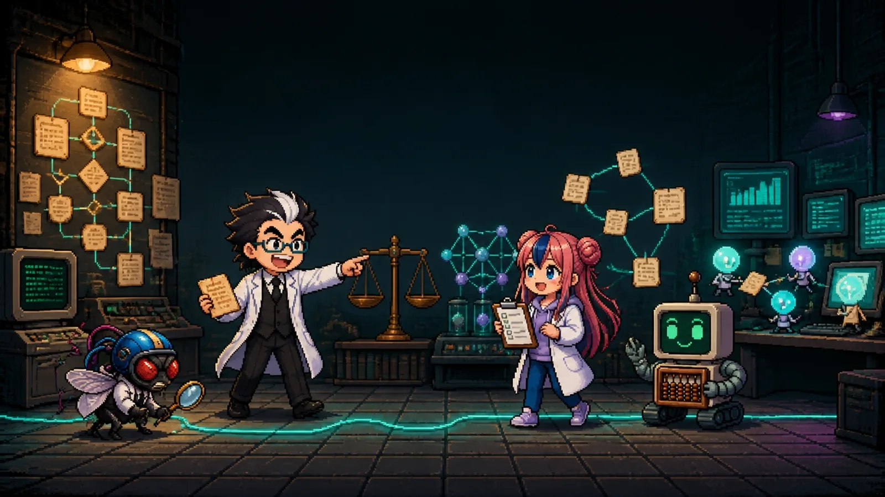
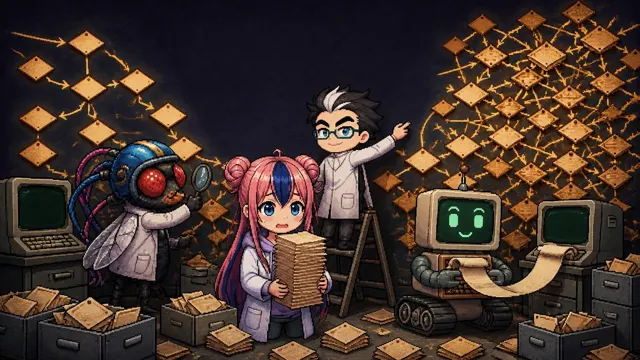
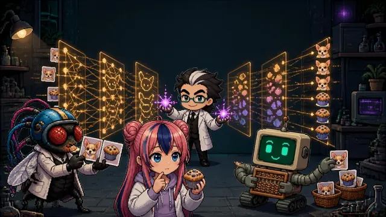
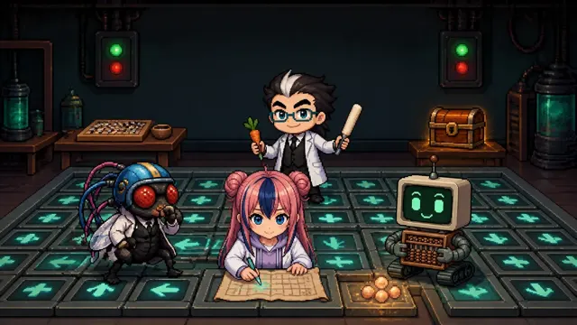
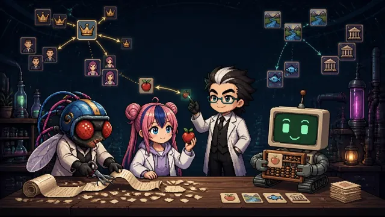
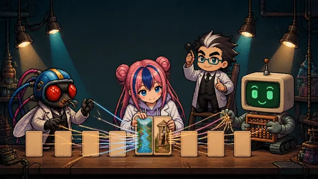
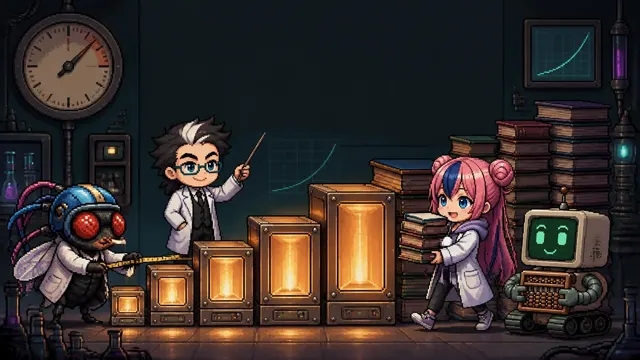
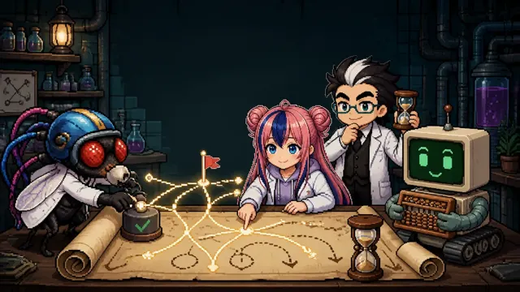
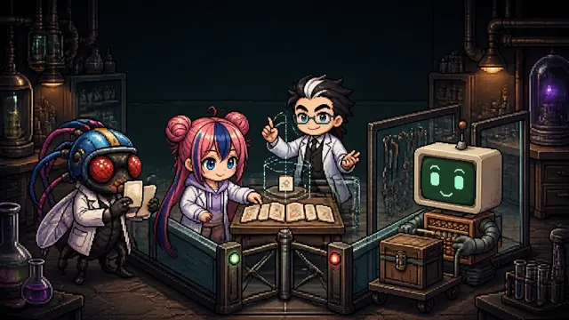
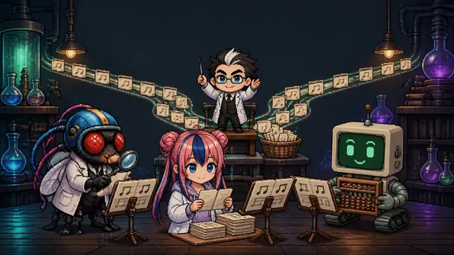

Bạn sẽ theo dõi qua mười lăm chương: sơ đồ khối mà con người từng tự tay viết IF-THEN đã trở thành mô hình suy luận LLM như thế nào (Phần 1), và mô hình ấy đã cầm lấy công cụ để tự làm việc, trở thành AI biết làm việc ra sao (Phần 2). Mỗi chương đều có công thức, hình minh họa để tự thao tác, mã Python đã chạy thật và câu hỏi kiểm tra.
Ai là người viết quy tắc: con người → dữ liệu → phần thưởng → văn bản và sở thích của con người

Phần 1 · Chương 1Cỗ máy dây cót: sơ đồ khối và rule baseMột cỗ máy mà con người tự tay khắc từng bánh răng. Bật nguồn lên, nó chỉ chạy theo đường đã định, và gặp việc không có trong bản thiết kế thì dừng lại. Trí tuệ nhân tạo những năm 1950~80 "suy nghĩ" như vậy…Phần 1 · Chương 2Chiếc cân tự chỉnh vạch chia: học máyĐo cái gì vẫn do con người quyết định. Nhưng kẻ vạch chia ở đâu thì giờ đây máy nhìn dữ liệu và tự chỉnh. Đây là bước đầu đi từ thời đại của quy tắc sang thời đại của học…
Phần 1 · Chương 3Cỗ máy học cả cách nhìn: học sâuChiếc cân ở Chương 2 cần con người chỉ ra phải đo cái gì. Cỗ máy ở Chương 3 nhận nguyên các điểm ảnh, và tự tìm ra cả việc cần nhìn vào đâu. Bí quyết là một dòng học…
Phần 1 · Chương 4Trại huấn luyện cà rốt và roi: học tăng cườngCó những bài toán mà không ai biết đáp án. Nước đi kế tiếp trong cờ vây, lối ra của một mê cung lần đầu bước vào. Lúc này thứ có thể đưa cho máy không phải đáp án mà là điểm số "làm tốt, làm dở"…
Phần 1 · Chương 5Biến lời nói thành con sốBản chất của mô hình ngôn ngữ đơn giản đến kinh ngạc. "Đoán từ sẽ xuất hiện tiếp theo." Chương này nói về luật chơi của trò đó, và hai cách biến từ ngữ thành con số mà máy có thể tính toán…
Phần 1 · Chương 6Đôi mắt nhìn tất cả các từ trong một lần: TransformerChương 5 để lại hai bài tập. Cách nhớ phần đầu câu đến tận cuối câu, và cách gán những con số khác nhau cho từ "bank" khi nó là bờ sông và khi nó là ngân hàng. Năm 2017, nhóm nghiên cứu của Google…
Phần 1 · Chương 7Bản chất của "đột nhiên": mở rộng quy môKhi ChatGPT ra mắt ngày 30 tháng 11 năm 2022, cả thế giới có cảm giác AI đột nhiên xuất hiện. Chỉ hai tháng đã có 100 triệu người dùng mỗi tháng. Nhưng các bộ phận bên trong…Phần 1 · Chương 8Khoảnh khắc ChatGPT: thuần hóa bằng sở thích của con ngườiGPT-3 thông minh nhưng chưa phải người để trò chuyện. Hỏi một câu thì nó viết tiếp câu hỏi, sai một cách nghe rất hợp lý, và nói cả những điều không ai bảo. Câu hỏi mà Nhà nghiên cứu Ruồi giấm đã đặt ra ở Chương 4…
Phần 1 · Chương 9Mua thời gian để suy nghĩ: mô hình suy luậnMáy suy luận ở Chương 1 nối các kết luận bằng cách đối chiếu những quy tắc do con người viết. Mô hình suy luận năm 2024 tự viết ra lời giải dài, nhìn lại chỗ sai, thử nhiều đường…Giao việc gì, kiểm tra bằng quy tắc nào, và khi nào thì dừng

Phần 2 · Chương 2Prompt → ngữ cảnh → khung điều khiểnỞ Chương 1, tác tử chỉ viết "máy tính[biểu thức]", còn chạy máy tính thật là chương trình bên ngoài. Chương này cho thấy việc thiết kế phần bên ngoài đó mở rộng qua ba bước ra sao…Phần 2 · Chương 3Kỹ thuật vòng lặp: khi nào lặp, khi nào dừngKhung điều khiển ở Chương 2 dựng nên môi trường để tác tử làm việc. Nhưng người giữ cho công việc tiếp tục chạy vẫn là con người. Xem kết quả, viết chỉ thị kế tiếp, rồi chạy lại…
Phần 2 · Chương 4Điều phối: tác tử nhạc trưởng và các tác tử conNhạc trưởng của dàn nhạc không tự chơi nhạc cụ. Ông chia bản nhạc thành các bè giao cho từng người, giữ nhịp và lắng nghe toàn bộ âm thanh. Đến Chương 3, chỉ có một tác tử chạy vòng lặp…Phần 2 · Chương 5Vòng lặp tự cải thiện nhìn qua HermesTừ Chương 1 đến 4, bạn đã lần lượt xem các bộ phận: tác tử, khung điều khiển, vòng lặp và điều phối. Chương này xem các bộ phận ấy được lắp ghép vào một sản phẩm thật như thế nào, và…Phần 2 · Chương 6Sợi chỉ xuyên suốt của học tăng cườngBạn đã đi qua 9 chương của Phần 1 và 5 chương của Phần 2. Từ một tờ sơ đồ khối, ta đã đến tác tử tự làm việc và tự tích lũy mẹo. Chương cuối này không giới thiệu công nghệ mới…